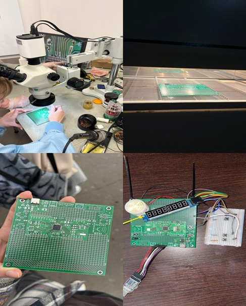
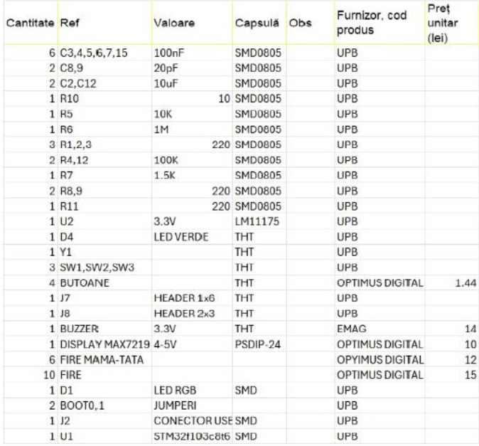
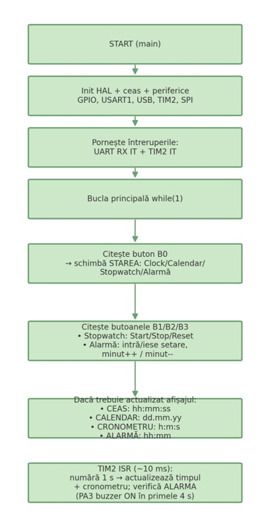
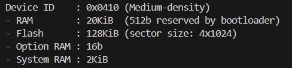
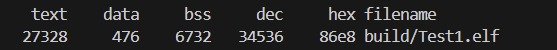

Modul de implementare
Sistemul este realizat pe microcontrolerul STM32F103CBTx. Interfața cu utilizatorul este un afișaj cu 8 cifre, 7 segmente, controlat de driverul MAX7219. Afișajul arată ora (hh.mm.ss), data (dd.mm.yy), timpul cronometrului și ora alarmei; punctul „.” se obține aprinzând punctul zecimal (DP) la cifrele corespunzătoare.
Mod de funcționare
- Ora se afișează pe un display cu cifre, controlat de un afișaj cu 7 segmente MAX7219.
- Cu ajutorul butoanelor fizice se poate schimba starea, se poate activa cronometrul și seta alarma.
- Comunicația cu PC-ul se face prin conexiune UART (serială).
- Pentru I/O au fost folosite butoane, un display cu 8 cifre legat prin SPI la microcontroller și o conexiune UART pentru trimiterea de date.
- Componente folosite: buzzer, display MAX7219, butoane.
Descriere logică
- La pornirea cronometrului, microcontrollerul numără secundele și le afișează pe ecran.
- La ora programată, alarma activează buzzer-ul când ora alarmei este egală cu ora curentă.
- Calendarul ține evidența zilelor, lunilor și anilor; se poate modifica prin butoane.
- Comunicația UART permite trimiterea datelor către PC pentru monitorizare.
Componente de I/O
Afișaj 7-seg × 8 digiți — MAX7219
Protocol: SPI
PA7— SPI1_MOSI → DIN (date către MAX7219)PA5— SPI1_SCK → CLK (ceas)PA4— GPIO Output → CS/LOAD (chip select, activ LOW)PA6— SPI1_MISO: nefolosit
Butoane — input, pull-up, active-LOW
PB15— B0: schimbă modul (Ceas → Calendar → Cronometru → Alarmă)PB14— B1: Cronometru Start/Stop/Reset; Alarmă intră/iese din setarePB13— B2: setare alarmă → minut++PB12— B3: setare alarmă → minut--- Fiecare buton între PBx și GND;
GPIO_PULLUPactiv
Buzzer pentru alarmă
PA3— GPIO Output → buzzer (activ HIGH), celălalt pin → GND
Timer intern & UART
- TIM2: PSC=7199, ARR=100 ⇒ întrerupere ~10 ms; 100 tick ≈ 1 s
- UART (
printf):PA9TX → RX adaptor USB–TTL;PA10RX ← TX; 9600 8N1; GND comun
Componente adiționale
- Modul afișaj 7-segmente + MAX7219
- Rezistențe externe NU sunt necesare (MAX7219 are curent constant integrat)
- Luminozitate programabilă (registrul
INTENSITY0…15)
- 4 butoane tactile 6×6 mm (pentru B0…B3)
- Montaj: pin ⇄ buton ⇄ GND; pull-up intern activat în microcontroller
- Debounce în software (200 ms)
- Buzzer piezo / activ 3.3 V
- Fire rigide pentru breadboard și plăcuță prototip
- Sursa de achiziție: Optimus Digital
Descrierea hardware
În pozele următoare se regăsesc placa de test parțial realizată și placa de test finalizată, împreună cu ansamblul complet (afișaj, buzzer și breadboard).

BOM — Bill of Materials

Descrierea software

Software-ul rulează pe microcontrollerul STM32F103CBTx și a fost realizat cu STM32CubeMX + HAL.
Codul generat automat este păstrat, iar modificările proprii sunt inserate între blocurile
/* USER CODE BEGIN … */ și /* USER CODE END … */, astfel încât rămân la orice regenerare.
Sistemul funcționează ca o mașină de stări cu patru moduri: Clock, Calendar, Cronometru și Alarmă.
La inițializare, ceasul sistem este setat la 72 MHz (HSE 8 MHz + PLL×9). TIM2 este configurat
cu prescaler 7199 și perioadă 100 pentru a genera o întrerupere la ~10 ms. În rutina
HAL_TIM_PeriodElapsedCallback() se numără 100 ticks pentru a obține 1 s, se incrementează variabilele de
timp (ore, minute, secunde), se rulează cronometrul dacă este activ și se verifică alarma; în primele 4 secunde ale
minutului programat, pinul PA3 este pus în nivel logic „1” și se comandă buzzerul. Variabilele partajate
cu ISR sunt declarate volatile.
Interfața cu utilizatorul este realizată cu un afișaj 7-segmente (8 digiți) controlat de MAX7219,
conectat prin SPI1: PA7→DIN (MOSI), PA5→CLK (SCK), PA4→CS/LOAD;
PA6 (MISO) nu este utilizat. Afișajul este inițializat (Decode Mode pe toți digiții, Scan Limit 8,
Intensitate, ieșire din Shutdown), iar scrierea se face prin trimiterea perechilor [adresă, valoare] cu
MAX7219_Send(). Pentru mesajele din terminal, UART1 rulează la 9600 bps, printf()
fiind redirecționat prin _write().
Controlul se face cu patru butoane pe PB15…PB12 (B0–B3), configurate input cu pull-up (active-LOW). În bucla principală se face polling cu un mic debounce software și cu flag-uri pentru a genera o singură acțiune la fiecare apăsare. B0 comută starea aplicației; B1 pornește/oprește/resetează cronometrul sau intră/iese din modul de setare a alarmei; B2 și B3 modifică minutul alarmei. Astfel, proiectul integrează perifericele GPIO, SPI, TIM și UART pentru a realiza un ceas digital complet cu cronometru, calendar și alarmă, cu afișare stabilă și interacțiune în timp real.
Raportul compilatorului


Aceste valori sunt în limitele normale pentru microcontrolere STM32 (ex. STM32F103C8T6), ceea ce înseamnă că proiectul este compatibil și poate fi încărcat și executat corect pe dispozitiv.
Concluzie
Proiectul de ceas digital cu cronometru, calendar și alarmă pe STM32F103CBTx a fost implementat și testat cu succes, folosind STM32CubeMX + HAL. Interfața este realizată cu un afișaj MAX7219 (8×7-segmente) comandat prin SPI, patru butoane (input cu pull-up, active-LOW) și un buzzer pe PA3. Timpul este menținut în TIM2 (tick ~10 ms) cu actualizarea secundelor/minutelor/orelor și logica de alarmă în ISR; comunicarea de debug se face prin USART1 (9600 bps).
Arhitectura software este o mașină de stări (Clock/Calendar/Stopwatch/Alarm), cu debounce software și afișare actualizată în funcție de starea curentă. Codul respectă structura „USER CODE” pentru a rămâne robust la regenerarea CubeMX.
⇒ Utilizare mult sub limite, rămân suficiente rezerve pentru extinderi.
Posibile îmbunătățiri
Folosirea RTC + cristal LSE 32.768 kHz pentru acuratețe pe termen lung, trecerea butoanelor pe întreruperi EXTI, moduri low-power și memorarea setărilor în EEPROM emulat / backup registers.